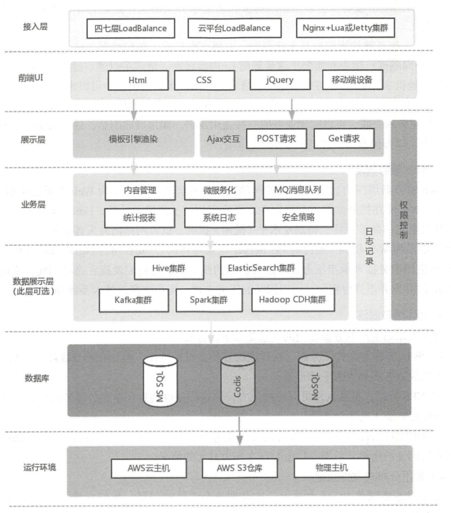

Contents
1. 01.Devops与自动化运维的意义¶
1.1. 为什么企业需要自动化运维¶
总结一下自动化运维可能带来的好处？
消除无效率： 运维工作的手动工作，如果可以实现自动化，将显著提升效率水平
减少错误：使用自动化运维工具来完成常规操作可以将错误率大大降低
最大化员工使用：避免雇佣更多的员工来应对工作量增加的需求，同样一批人有自动化运维，就有更大的能量创造价值。
提高满意度水平: 自动化运维工具帮助IT运维，可以为内部员工和外部客户提供高水平支持，更好地拥抱SLA。
降低成本：系统中断、人为错误、重复工作，会导致不菲的费用和代价，而自动化运维几乎可以将这些成本完全消除。
1.2. 为什么要前后端分离¶
如果从软件开发的层面上来理解，则前端与后端分别处理如下内容：
前端:负责View和Controller层
后端:只负责Model层，进行业务处理和数据处理
当公司存在着PHP/Java技术团队，另外还有GO/python后端研发团队和移动端开发团队。这几个团队虽然是在做不同的产品，但是存在大量重复性的开发，团队就需要思考这样一个方案：
如果前端实现与后端技术无关，那么页面呈现的部分就可以共用了，不同的后端技术只需要实现各自的后端业务逻辑就好。
主要解决的根本问题是将数据和页面剥离开来。
前端采用静态页面相关的技术：HTML+CSS+JavaScrips，通过AJAX技术调用后端提供的业务接口(主要是PHP研发团队负责).前后端协商好接口方式，通过HTTP来提供实现，统一使用POST提交数据。接口数据结构使用JSON实现，前端jQuery解析Json很方便，后端处理JSON的工具就跟多了。
前后端分离之后，两端的开发人员都可以轻松不少，由于技术和业务变得更加专注，因此开发效率也得到了提高。分离带来的好处如下：
(1)前后职责分离
前端倾向于呈现，着重处理用户体验相关的问题；
后端则倾向于处理业务逻辑、数据处理和持久化等相关的问题。在设计清晰的情况下，后端只需要以数据为中心对业务处理算法负责，并按约定为前端提供API；而前端则使用这些接口对用户体验负责即可。
(2)前后技术分离
前端只需要会HTML+CSS+JavaScript，不需要关注后端的开发技术
后端只需关注后端开发技术和Web API即可，不用考虑特别复杂的数据组织和呈现
(3)前后分离带来了用户体验和业务处理解耦
前端的需求改版对后端毫无影响；
后端的业务逻辑升级、数据持久方案变更，只要不影响接口，前端也毫无知情，
当然需要变更引起了接口变化，那么前后端又需要在一起进行信息同步了。
（4）前后分离，可以分别归约两端的设计
后端只提供API而不用考虑页面呈现的问题，实现SOA架构的API可以服务于各种前端，而不仅仅是Web前端，可以做到一套服务各端使用。
1.3. 什么是RESTful¶
参考：
1.4. Web编程相关体系知识点¶
1.4.1. 同步和异步、阻塞与非阻塞的区别¶
(1)同步与异步
所谓的同步，就是在发出一个“调用”时，在没有得到结果之前，该“调用”不返回； 但是一旦调用返回，就会得到返回值了。换句话来说就是“调用者”主动等待这个“调用”的结果。
而异步则正好相反，在发出“调用”之后这个“调用”就直接返回了，所以没有返回结果。
换句话说当一个异步过程发出“调用”之后，“调用者”不会立即得到结果，而是在“调用”发出之后， “被调用者”通过状态、通知来通知调用者，或通过回调函数来处理这个调用。
举例：
同步：
你打电话去报刊亭买报纸，你问报刊亭的老板,有抖音相关的报纸吗？老板就跟你说：我去查阅一下，你在电话这边一直等着。
然后老板开始找报纸，找报纸的过程可能是1个小时，也可能是1天，期间你一直等待着。老板找到后告诉你找到了，让你过来买。
异步：
你去报刊亭买报纸，你问报刊亭的老板,有抖音相关的报纸吗？老板就跟你说：你回去等我电话，我找到了就打你电话，就挂了电话，给了你一个通知，
老板找到后主动给你打电话，让你带钱过来拿报纸。
（2）阻塞与非阻塞
阻塞与非阻塞关注的是程序在等待调用结果（消息、返回值）时的状态。
阻塞调用是指调用结果返回之前，当前线程会被挂起，调用线程只有在得到结果之后才返回。
非阻塞调用是指在不能立刻得到结果之前，该调用不会阻塞当前线程。
还是上面的例子：
阻塞： 当你打电话到报刊亭问有没有抖音相关的报纸的时候，你会一直把自己“挂起”，知道得到有没有这本书的结果。
非阻塞： 你不用考虑老板有没有找到报纸，你自己先去做别的事，当然偶尔过几分钟也会来检查老板有没有返回结果，这里的阻塞与非阻塞与是否同步异步无关，也与老板回答你结果的方式无关。
期间你是可以处理其他事情的。
1.5. 从事Devops应该掌握的语言¶
- shell
- Python
- Go
比较Python与Go，看看Go语言的优势在哪里：
1）部署简单：Go语言编译生成一个静态可执行文件，除了glibc之外再没有其他的外部依赖，这也是部署变得异常方便：目标机器上只需要一个基础的系统和必要的管理、监控工具，完全不用操心应用所需的各种包、库的依赖关系，大大减轻了维护的负担。
2）并发性好，天生支持高并发：Goroutine和Channel使得编写高并发的服务端软件变得相当容易，很多情况下完全不需要考虑锁机制以及由此带来的各种问题。
单个Go应用也能有效地利用多个CPU核，其并行执行能力很好。是Python不能相比的，多线程和多进程的服务编写起来并不简单，而且由于Python全局锁GIL的原因，多线程并不能有效利用多核，只能用多进程的方式进行部署，在很多场景下这并不能有效的利用计算机资源，这也是饱受Python爱好者诟病的地方。
3）良好的语言设计：有其他语言基础能迅速上手，有大量标准库和三方库。Go自带完善的工具链。
4)执行性能好: Go语言虽然不如C和Java，但是比原生Pyhton应用还是高一个数量级的，适合编写一些瓶颈业务，内存占用也非常低。
Go语言的应用场景:
- 服务器编程，如果之前使用C或者C++进行服务器编程，那么使用Go来做也很合适。例如日志处理系统、数据打包、虚拟机处理、文件系统等
- 分布式存储、数据库代理器等
- Key-Value存储，例如工作中常见的etcd
- 网络编程，目前这一块应用最广，包括Web应用、API应用、下载应用等
- 内存数据库、前一段时间google开发groupcache等。
- 游戏服务端的开发。
- 云平台，目前国内很多云平台都使用Go开发，例如国外的CloudFoundy、Apcera云平台和国内的青云、七牛云等。
平常的Devops中，除了使用Python之外，还可以使用Go语言来编写某些项目需求，或自动化运维的API。
1.6. 从事DevOps工作应该掌握的工具¶
版本控制管理（SCM）
Github、GitLab、SubVersion，考虑到汉化和网络方面的原因，国内企业在Github和GitLab之间进行选择的时候，一般是选择GitLab
构建工具
Ant、Gradle、Maven。Maven除了以程序构建能力为特色之外，还提供了高级项目管理工具。
持续集成
Jenkins，大名鼎鼎的软件，基本上是CI的代名词。Jenkins是全球最留下的持续集成工具，国内某社区曾经调研Jenkins在国内的使用率为70%左右。
配置管理
Ansible、Chef、Puppet、SaltStack，这些都是自动化运维工作中常见的工具。
虚拟化
Xen或KVM、Vagrant
容器
Docker 、LXC 、第三方厂商如AWS ,这里需要注意Docker 与Vagrant 的区别。
服务注册与发现
zookeeper 、etcd 。
日志管理
大家都很熟悉的ELK。
日志收集系统
Fluentd 、Hekao。
压力测试
JMeter 、Blaze Meter 、loader.io。
消息中间件
ActiveMQ 、RabbitMQ 。
1.7. 了解网站系统架构设计和高并发场景¶
网站性能评估指标
网站设计得好还是不好,我们可以参考吞吐量、每秒查询率（ QPS) 、响应时间(Response Time) 、并发用户数， PV 等作为辅助指标， 但它们并不能真实地反映网站的性能。 QPS: 每秒响应请求数。 吞吐量： 单位时间内处理的请求数量， 在互联网领域， 这个指标与QPS 的区分并没有那么明显。 响应时间： 系统对请求做出的响应时间， 例如系统处理一个HTTP 请求需要200ms ，那么这里的200ms 就是系统的响应时间。 并发用户数： 同时承载正常使用系统功能的用户数量。
细分五层解说网站架构
1.网页缓存层专业的CDN租赁比自行部署Squid、Varnish更好，更专业。很多朋友喜欢尝试自建CDN，这是一个比较吃力不讨好的活。这一层有很多优秀的开源软件能胜任这个工作，比如传统的Squid，后起之秀Nginx、Varnish因为性能优异，越来越多开发者尝试在自己网站使用Nginx和Varnish，作为自己的网页缓存。事实上，Nginx已经具备Squid所拥有的Web缓存加速功能。
此外Nginx对多核CPU的利用也胜过了Squid，现在越来越多的架构师都喜欢将Nginx同时作为“负载均衡器”与“Web缓存服务器”来使用，可以根据自己网站的情况，决定究竟使用哪种软件来对自己的网站提供反向代理加速服务。
网站系统架构设计图

2.负载均衡层我们熟悉的开源软件包括：LVS、HAProxy、Nginx，它们的性能全部都非常优异。
建议将负载均衡分成两级来处理， 一级是流量四层分发， 二级是应用层面七层转发（ 即业务层面） 。
首先我们可以通过或HAProxy 将流量转发给二层负载均衡（ 一般为Nginx), 即实现了流量的负载均衡， 此处可以使用如轮询、权重等调度算法来实现负载的转发；
然后二层负载均衡会根据请求特征再将请求分发出去。此处为什么要将负载均衡分为两层呢？
1 ） 第一层负载均衡应该是无状态的， 方便水平扩容。我们可以在这一层实现流量分组（ 内网和外网隔离、爬虫和非爬虫流量隔离） 、内容缓存、请求头过滤、故障切换（ 机房故障切换到其他机房）、限流、防火墙等一些通用型功能， 无状态设计， 可以水平扩容。
2 ） 二层Nginx 负载均衡可以实现业务逻辑， 或者反向代理到如Tomcat ， 这一层的Nginx 与业务相关联， 可以实现业务的一些通用逻辑。如果可能的话， 这一层也应尽量设计成无状态， 以方便水平扩容。
3.Web服务层web 服务器层压力比较大， 大的网站现在都选择将Nginx 作为web 主要应用服务器，事实上， Nginx 在抗并发能力和稳定性方面确实超过了预期。另外， 集群还有一个优势， 那就是它的高扩展性， 特别是水平（ 横向） 扩展。就算网站的并发连接数有1 0 万以上，也无非是多加web 机器（ 廉价的PC server 也是可行的） ， 或者通过Nginx+lua 这种高性能的web 应用服务器来承担压力。
在进行实际的线上维护时我们发现在高峰期间， 实际上每台web 的并发并不算特别大， 所以网站的压力在这一层也能通过技术手段加以克服。
4.文件服务器层1)单NFS作为文件服务器，存在单点故障，NFS机器出现故障时需要人为手动干预
2）NFS分组，虽然这样可以分担压力，但是也会存在单点故障，NFS机器出现故障时需要人为手动干预
3）DRBD+Heartbeat+NFS高可用文件服务器，维护方便，不存在单点故障问题，但是随着访问量的增大，后期一样会存在压力过大的情况
- 采用分布式文件系统
例如MooseFS、MooseFS易用、稳定，对于海量肖文杰的处理很高效，而且新版MooseFS解决了Master Server存在单点故障的问题，稳定和社区也非常成熟，国内越来越多的公司也在使用MFS。
5.数据库层Oracle RAC是很成熟的分布式方案，但是价格非常昂贵。
Redis+RabbitmQ+Mysql方案较为常见